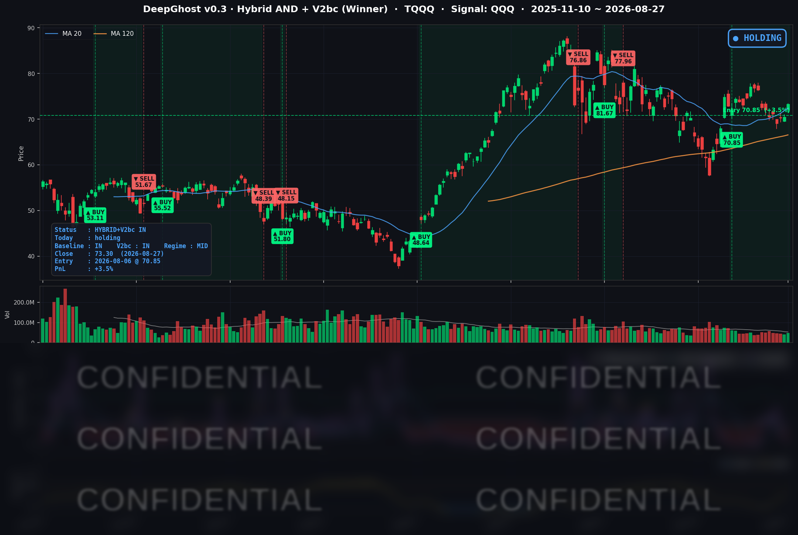

👻 매일 시그널과 히스토리를 홈페이지에서 한눈에 → www.ghostai.co.kr
당분간 골디락스 장세가 기대됩니다. 하지만 호르무즈 해협 상황에 의한 물가 상승 압박이 중간중간 조정의 빌미로 작동할 가능성이 큽니다.
📊 오늘의 매매 신호
| 항목 | 내용 |
|---|---|
| 오늘 할 일 | ✅ 아무것도 안 해도 됩니다 |
| 포지션 상태 | 📈 TQQQ 보유 중 (IN POSITION) |
| 매수 진입일 | 2026-08-06 (16거래일째) |
| 진입가 → 현재가 | $70.85 → $73.30 |
| 현재 포지션 수익 | +3.46% |
TQQQ 시그널 — IN POSITION
현재 상태: 매수 포지션 유지 중 | 이번 포지션 수익률 +3.46%

TQQQ가 하루에 +4.02% 오르면서, 전략의 평가손익은 -0.54% → +3.46%로 바뀌었습니다. 8월 6일 진입 이후 처음으로 의미 있는 플러스 구간입니다.
오늘 미국 시장 — 시황 요약
지수 마감
| 지수 | 종가 | 등락률 |
|---|---|---|
| S&P 500 | 7,730.99 | +0.72% |
| 나스닥 종합 | 26,541.35 | +1.57% |
| 다우존스 | 53,569.44 | +0.20% |
| 러셀 2000 | 3,014.34 | +0.28% |
| QQQ (나스닥100) | 721.11 | +1.37% |
숫자만 보면 좋은 하루입니다. 그런데 개별 종목을 전수로 보면 이야기가 달라집니다.
S&P 500이 +0.72% 올랐는데, 500개 종목의 중앙값은 -0.63%였습니다. 오른 종목 157개, 내린 종목 343개. 셋 중 둘이 내린 날에 지수는 플러스로 마감했습니다. 다우는 30종목 중 6개만 올랐는데도 지수는 상승입니다. 지수와 중앙값 종목의 격차는 2021년 이후 1,400여 거래일 중 상위 0.4%에 드는 극단이었습니다.
오늘 나스닥100 상승분의 약 79%가 엔비디아 한 종목에서 나왔습니다. 소수 대형주가 지수를 들어올린 날은 뒤집어 말하면, 그 소수가 꺾이면 지수도 함께 꺾인다는 뜻입니다. 실제로 2021년 이후 이만큼 편중됐던 13번의 사례를 보면, 이후 1일·3일·5일 나스닥100의 기대수익은 모두 마이너스로 돌아섰습니다. 좋은 하루였지만, 그대로 이어지는 종류의 하루는 아닐 수 있습니다.
국채 금리 동향
| 만기 | 수익률 | 전일 대비 |
|---|---|---|
| 3개월 | 3.678% | -1.2bp |
| 5년 | 4.396% | +1.5bp |
| 10년 | 4.672% | +0.8bp |
| 30년 | 5.191% | +0.5bp |
전 구간이 ±1.5bp 안에서 멈춰 섰습니다. 장단기 스프레드(10년-3개월)는 +99.4bp로 정상적인 우상향이고 역전은 없습니다. 주식이 크게 갈린 날에 채권이 이렇게 움직이지 않았다는 것 자체가 메시지입니다 — 채권시장은 내일 아침 연준 의장 연설 전까지 방향을 잡지 않겠다는 쪽을 택했습니다.
하나 눈여겨볼 대목이 있습니다. 현재 연준 목표범위는 3.50-3.75%인데, 3개월물이 3.678%로 그 중간값보다 위에 있습니다. 단기 금리가 여기 붙어 있다는 것은 시장이 가까운 시일 내 금리 인하를 사실상 전혀 반영하지 않고 있다는 뜻입니다.
연준 발언 & 금리 패스
오늘 정책 관련 연준 발언은 없었습니다. 잭슨홀 심포지엄은 8월 27일 저녁 개막했지만 정책 연설은 28일부터입니다.
현재 기준선은 7월 FOMC입니다. 목표범위 3.50~3.75% 동결이었고, 반대표 3인이 전원 "인상"을 요구했습니다. 같은 방향으로 3명이 반대표를 던진 것은 2016년 9월 이후 처음입니다.
8월 28일(금) 오전 10시(현지) 케빈 워시 의장의 취임 후 첫 잭슨홀 기조연설이 예정돼 있습니다. 9월 FOMC를 3주 앞둔 유일한 최상위 시그널입니다. 인하 기대가 가격에 거의 없다는 것은, 비둘기적 발언이 나와도 새로 반영할 것이 별로 없는 반면 매파적 발언은 곧바로 반영된다는 뜻이기도 합니다. 완충이 얇은 상태로 이벤트를 맞는 셈입니다. 같은 시각 미시간대 소비자심리 확정치도 발표돼 헤드라인이 겹칠 수 있습니다.
오늘의 핵심 이슈
1. 엔비디아 +8.74% — 뒤집은 것은 실적이 아니라 컨퍼런스 콜. 전날 시간외에서는 -2%까지 밀렸습니다. 최근 네 분기 연속 반복된 "실적은 좋은데 이튿날 주가는 빠진다"는 패턴이 또 나오는 듯했지만, 정규장에서 완전히 반전됐습니다. 방향을 바꾼 것은 발표문이 아니라 콜이었습니다. CFO가 제시한 FY2028 약 +70% 매출 성장 전망(시장 컨센서스의 약 2배)과 "연산 능력이 곧 매출"이라는 프레이밍이, 올해 시장을 눌러온 "AI 투자는 이미 정점을 지났다"는 공포를 정면으로 겨냥했습니다. 신뢰도를 높인 단서가 둘 있습니다. ① +70%는 수요가 아니라 공급 제약으로 묶인 숫자라는 점, ② 다음 분기 가이던스가 중국 매출을 0으로 놓고 만들어졌다는 점입니다. (회계연도 주의: 이번에 보고된 분기는 Q2 FY2027이고, +70%는 FY2028 전망입니다.)
2. 진짜 주인공은 반도체가 아니라 소프트웨어였습니다. 섹터 중앙값 기준 소프트웨어 +4.89%(17종 중 16종 상승), IT서비스 +3.21%인 반면 반도체는 +1.82%에 그쳤고 그마저 엔비디아가 끌어올린 값입니다. 세일즈포스 +22.58%, 크라우드스트라이크 +20.50%(사상 최대 상승일). 두 회사 실적이 올해 내내 소프트웨어 주가를 짓눌러 온 "AI가 SaaS를 대체한다"는 논리를 숫자로 반박했습니다. 세일즈포스의 AI 상품 연간반복매출은 약 34억 달러로 전년 대비 3배, 크라우드스트라이크의 신규 순증 ARR은 사상 최대였습니다. AI가 소프트웨어의 위협이 아니라 매출원이라는 증거가 같은 날 두 건 나온 셈입니다.
3. 빅테크는 오히려 내렸습니다. 다만 자금이 옮겨간 것은 아닙니다. 아마존 -1.54%, 넷플릭스 -1.99%, 메타 -0.87%, 알파벳 -0.39%. 그런데 내린 대형주의 거래량이 전부 20일 평균을 밑돌았습니다. 자금이 빠져나갔다면 파는 쪽에 거래량이 실렸어야 합니다. 매도가 몰린 것이 아니라 매수가 없었던 것에 가깝습니다. 결정적인 증거는 마이크론 -0.32%입니다. 엔비디아 마진을 압박한 원인이 바로 메모리 원가인데도 무반응이었습니다. 즉 오늘의 매수는 "AI 수혜"라는 넓은 테마가 아니라 특정 서사에 직접 연결된 종목에만 들어갔습니다.
변동성 & 투자심리
VIX는 14.51로 -4.60% 내리며 1년 최저권까지 떨어졌습니다. 분기 최대 이벤트였던 엔비디아 실적이 지나가면서 나타나는 전형적인 변동성 소멸입니다. 공포탐욕지수는 59로 "탐욕" 구간에 있습니다.
여기서 한 가지는 분명히 해두겠습니다. VIX가 낮다는 것 자체는 위험 신호가 아닙니다. 과거 데이터를 보면 오히려 변동성이 극단적으로 낮은 날 다음 날에 큰 하락이 나올 확률은 평시보다 낮았습니다. 지금 조심할 이유는 VIX가 아니라, 금리 인하 기대가 가격에 전혀 들어 있지 않다는 앞서의 사실 쪽입니다.
다만 지수와 시장 내부의 온도차는 기억해둘 만합니다. 지수와 VIX만 보면 낙관이지만, 상승 종목 비율 31.4%에 12개 섹터가 하락한 것은 광범위한 관망에 가깝습니다.
매크로 & 원자재
원유 ETF(USO)는 +2.09%, 금 ETF(GLD)는 +0.30%로 마감했습니다. 유가는 반등했지만 에너지 섹터 자체는 -0.20%로 따라가지 않았습니다.
지표 쪽에서는 신규 실업수당 청구가 20만 3천 건으로 4천 건 줄었습니다. 노동시장이 여전히 견조하다는 뜻이고, 금리를 내릴 명분을 주는 숫자는 아닙니다. 캘린더로는 9월 8일 캐나다 보복관세 발효와 9월 15~16일 FOMC가 다음 분기점입니다.
주요 종목 동향
| 종목 | 종가 | 등락률 | 비고 |
|---|---|---|---|
| NVDA | 227.98 | +8.74% | 시간외 -2% → 정규장 급등. FY2028 +70% 성장 전망이 반전 트리거. 거래량 20일 평균의 2.55배 |
| AVGO | 371.54 | +4.49% | AI 설비투자 지속 해석의 2차 수혜 |
| INTC | 92.09 | +4.36% | 거래량은 평균 이하 — 쏠림이 아닌 동반 반응 |
| TSLA | 354.81 | +2.60% | AI 서사와 무관한 개별 강세 |
| MSFT | 505.06 | +1.75% | 대형 기술주 중 유일한 유의미 상승 (소프트웨어 랠리에 편입) |
| QCOM | 164.78 | +0.65% | 거래량은 늘었으나 가격은 무반응 |
| AAPL | 314.58 | +0.36% | 커버리지 내 최저 거래량 |
| MU | 935.39 | -0.32% | AI 메모리 최대 수혜주가 무반응 — 오늘 분화의 핵심 증거 |
| GOOGL | 340.65 | -0.39% | 낮은 거래량 속 표류 |
| META | 571.10 | -0.87% | 낮은 거래량 속 표류 |
| AMZN | 256.26 | -1.54% | 낮은 거래량 속 표류 |
| NFLX | 79.84 | -1.99% | 커버리지 내 최대 낙폭, 거래량은 평균 이하 |
다가오는 일정
- 8/28 (금) 오전 10시(현지) — 케빈 워시 의장의 취임 후 첫 잭슨홀 기조연설. 같은 시각 미시간대 소비자심리 확정치.
- 8/28 (금) — 오늘 급등한 종목들이 얼마나 버티는지가 서사의 진위를 가릅니다.
- 9/8 (월) — 캐나다 보복관세 발효. 9/15~16 — FOMC(점도표 동반).
Ghost.AI — Quantitative AI Investment
Model: DeepGhost v0.3 | Transformer-Based Deep Learning
Coverage: 13 tickers | Updated every trading day after US market close
⚠️ 본 자료는 정보 제공 목적으로만 작성되었으며 투자 권유가 아닙니다. 모든 투자의 책임은 투자자 본인에게 있습니다. 과거 성과가 미래 수익을 보장하지 않습니다.
[유의사항]
- 본 서비스는 불특정 다수를 대상으로 발행되는 단방향 정보 제공 서비스이며, 투자자 개인의 재산 상황·투자 목적·위험 선호도를 반영한 개별 투자 조언이 아닙니다.
- 고스트에이아이 주식회사는 고객과 쌍방향 의사소통(개별 상담, 맞춤형 자문 등)을 제공하지 않습니다.
- 본 콘텐츠는 투자 권유 또는 매매 주문의 청약·청약의 권유에 해당하지 않으며, 최종 투자 판단 및 그에 따른 손익의 책임은 전적으로 투자자 본인에게 있습니다.
고스트에이아이 주식회사